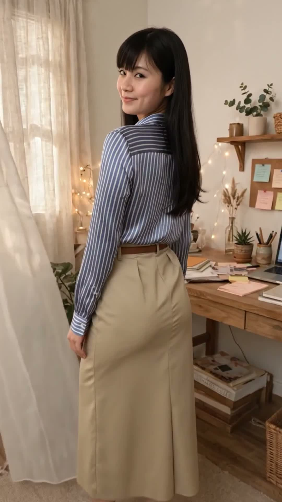

Set sọc lụa + chân váy kaki dài: gọn dáng mà vẫn trẻ trung
Sáng đi làm, Lisa phối set sọc này trong 3 phút: áo sơ mi sọc xanh trắng dài tay vải lụa + chân váy kaki dáng dài màu be kèm đai thắt eo màu nâu. Sơ mi sọc lụa, chân váy kaki dài thắt đai, gọn dáng mà vẫn trẻ trung.
Đọc trước khi mua: bài viết này là gợi ý phối đồ lấy cảm hứng từ set váy công sở áo sơ mi sọc dài tay vải lụa phối chân váy kaki dáng dài kèm đai đang gắn nhãn "Bán chạy nhất" trên TikTok Shop. Lisa là nhân vật AI, nên bài viết không phải bài đánh giá sản phẩm Lisa đã mặc thật hay đã dùng thử. Giá, chất liệu và size cần kiểm tra lại trên trang bán trước khi mua. Link mua hàng: [CHƯA GẮN LINK] — sẽ cập nhật khi Lisa Style đủ điều kiện gắn link affiliate.
Cùng một set sọc lụa và chân váy kaki, nhìn lúc đứng xoay, lúc ngồi bàn làm việc và lúc cười duyên sẽ khác nhau — xem đủ 3 góc rồi hãy quyết có hợp với bạn không:

Xoay khoe set — sọc dọc, váy dài thướt thaNgồi bàn làm việc — đai nâu thắt eo gọn dángCười duyên — sọc xanh trắng sáng mặt
Vì sao set sọc lụa + chân váy kaki hợp đi làm?
Sọc dọc kéo dáng dài ra: sọc xanh trắng chạy dọc thân áo tạo cảm giác người cao và gọn hơn; sọc nhỏ vừa phải, không rối mắt, hợp cả dáng nhỏ lẫn dáng đầy đặn.
Lụa mềm, đứng dáng mà vẫn thoải mái: vải lụa rủ nhẹ, không nhăn nhiều như cotton; áo dài tay che được bắp tay, mặc cả ngày trong phòng điều hòa vẫn mát, không bí.
Chân váy kaki dài + đai thắt eo: váy kaki dáng dài che được bắp chân, đi lại vẫn thoải mái; đai nâu thắt eo chia rõ tỉ lệ trên — dưới, nhìn chân dài hơn hẳn, eo cũng gọn hơn.
Màu be — nâu — xanh trắng, dễ phối phụ kiện: tông màu trung tính, hợp giày nude, túi nâu, đồng hồ vàng; đi làm cả tuần chỉ cần đổi phụ kiện là set đồ đã khác hẳn.
Cách chọn set sọc cho vừa người
Chọn sọc nhỏ, không sọc to: sọc to ngang dễ làm người trông đầy đặn hơn; sọc nhỏ chạy dọc là an toàn nhất, nhất là với người dáng nhỏ muốn cao hơn.
Đai thắt đúng eo, không thắt cao quá: đai nên nằm đúng vòng eo tự nhiên; thắt cao quá sẽ làm phần thân trên ngắn lại, thắt thấp quá thì mất tác dụng kéo chân dài.
Váy dài chạm mắt cá là vừa nhất: váy kaki dài tới mắt cá chân, đi giày cao gót nude sẽ kéo chân dài nhất; váy dài quét đất thì đi làm vướng víu, váy ngắn hơn thì mất vẻ thanh lịch của set.
Sơ mi đóng thùng gọn gàng: áo sơ mi lụa nên đóng thùng vào trong váy để lộ rõ đai thắt eo; áo buông ngoài sẽ che mất đai, set đồ mất điểm nhấn.
Mẹo phối nhanh trong 3 phút
Buổi sáng vội: mặc sẵn set sọc + váy kaki, chỉ cần thêm giày nude và túi nâu là xong; không cần nghĩ phối màu vì tông be — nâu — xanh trắng đã hợp nhau sẵn.
Muốn trẻ hơn: xõa tóc dài, đeo đồng hồ dây da nâu mảnh; tránh túi to bản cứng sẽ làm set đồ già đi.
Muốn nghiêm túc hơn cho buổi họp: thêm áo blazer đen hoặc be khoác ngoài, set sọc bên trong vẫn giữ được vẻ trẻ trung mà không mất lịch sự.